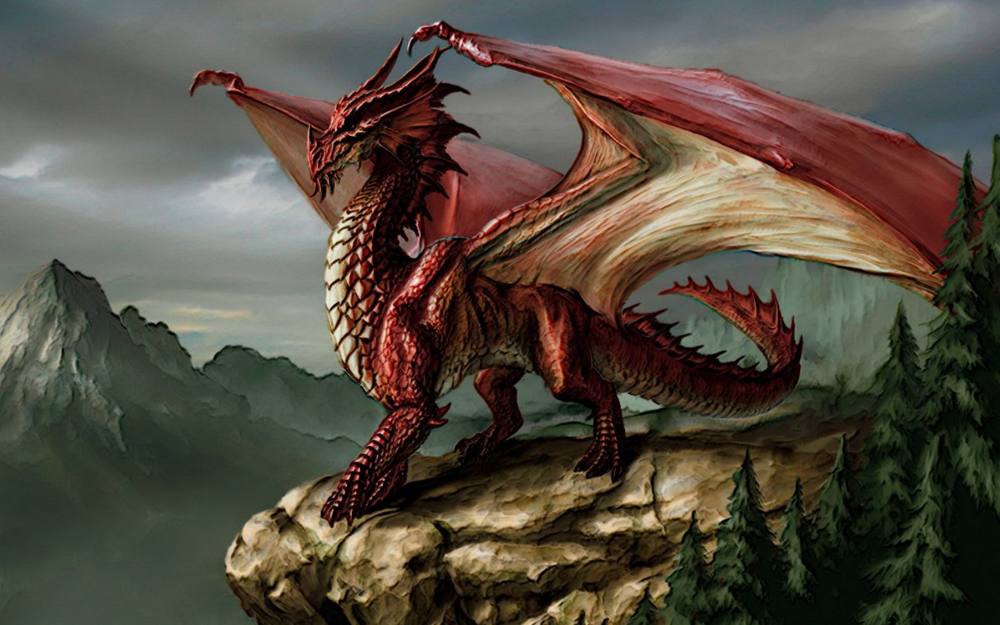
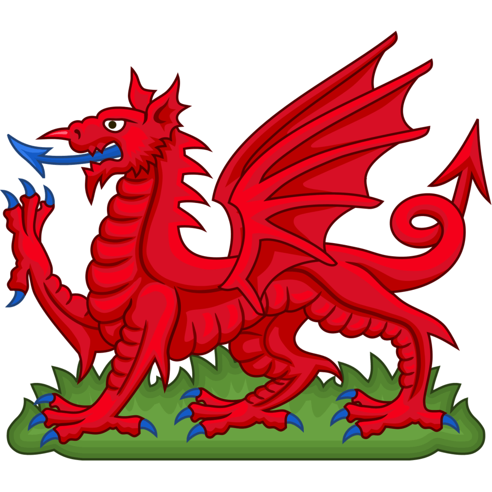
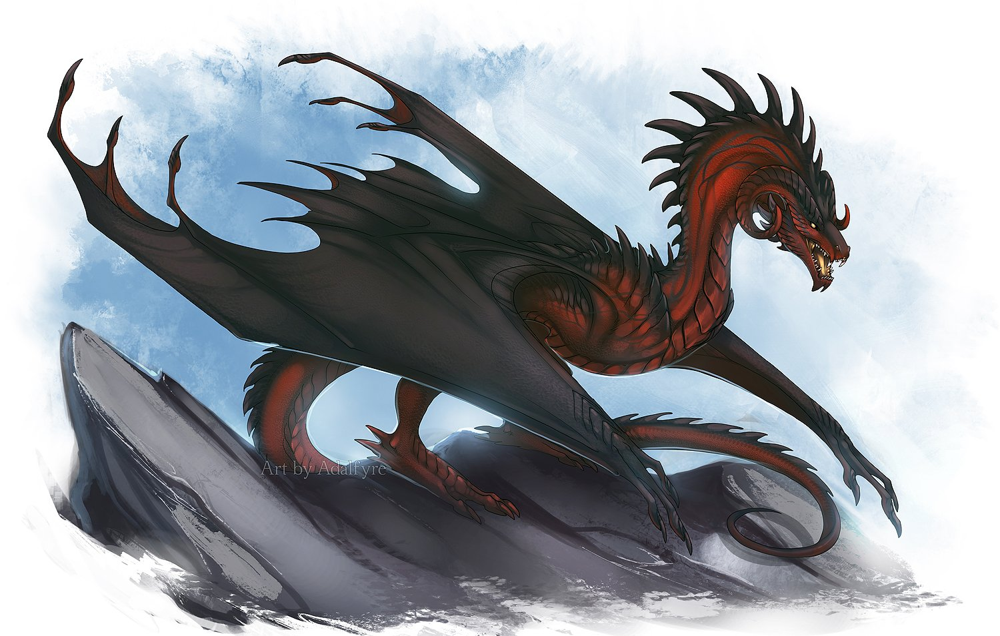
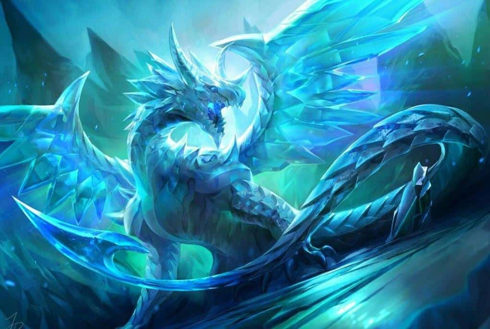
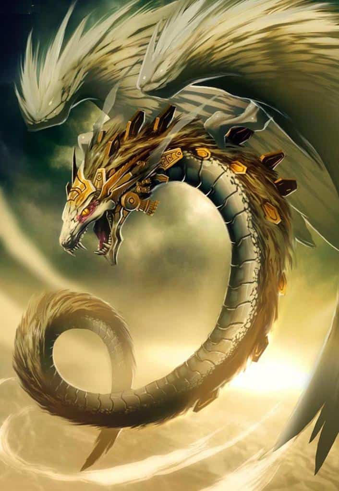
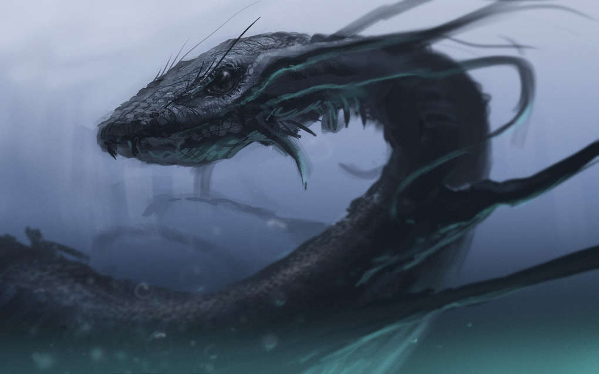
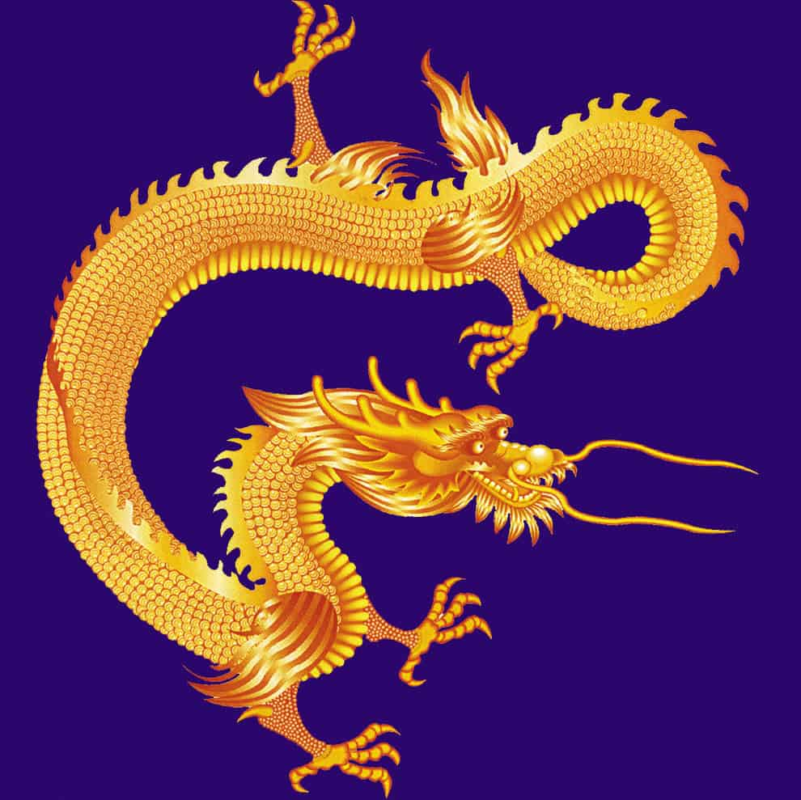
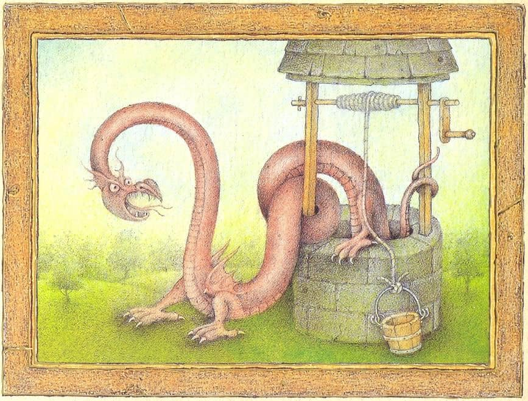
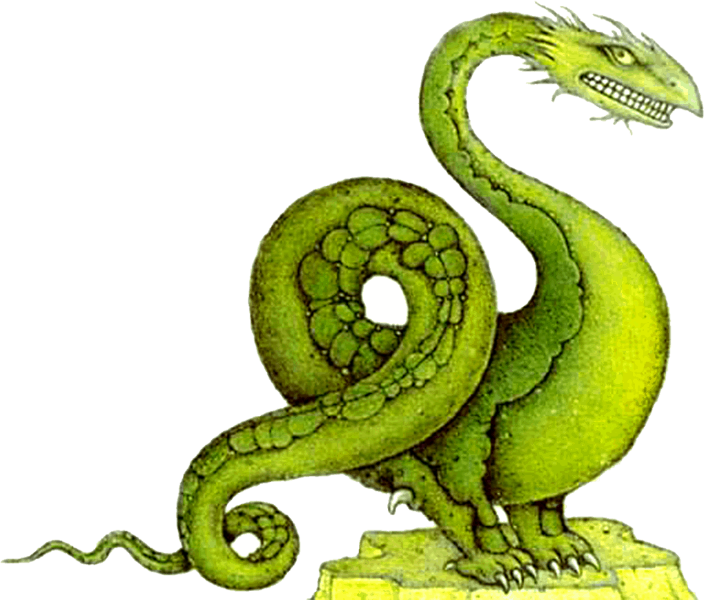
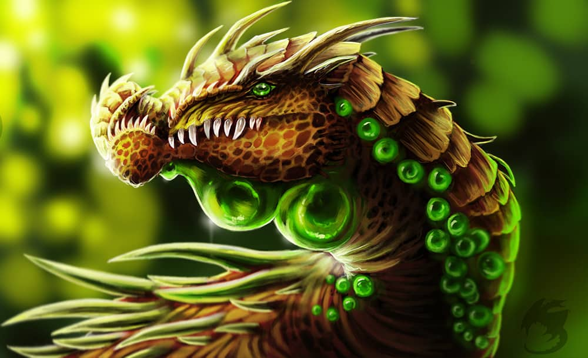

1. Дракон европейский классический
Дракон европейский классический - cамый распространённый дракон – классический европейский. Почти все классические драконы – весьма умны, но всё равно, очень часто, кровожадны, жестоки и подлы, ибо привыкли считать себя высшей расой земных существ (и, вообще-то, не без оснований!), которым всё позволено. Многие умеют (и любят) велеречиво говорить. Внешний вид классического дракона, в принципе, нам всем известен. Их размер, в среднем, составляет 14-15 метров в длину, 4-5 – в высоту. Огромные треугольные (или ромбовидные) крылья позволяют им летать далеко и быстро. Они способны выжигать своим огненным дыханием целые деревни за пару секунд (и иногда делают это без особых причин, просто для развлечения). Классический дракон использует драконью магию как для охоты, – например, может загипнотизировать или телепатически приманить жертву, так и, опять же, забавы ради (особенно если встречает чем-то заинтересовавшего его человека). По некоторым сведениям, европейские драконы способны на время принимать человеческий облик (и в таком виде – почему бы и нет? – соблазнять девушек). Живут классические драконы, чаще всего, в больших горных пещерах. И, как, опять же, всем известно, очень любят собирать там блестящие драгоценности.
2. Дракон геральдический
 Геральдический дракон - опаснейший вид драконов, поскольку имеет внешность и некоторые способности классического дракона (магические «фишки» вроде гипноза и телепатии, огненное дыхание и т.д.), но при этом только зачаточный разум. То есть все свои немалые «природные задатки» геральдический дракон использует исключительно «во зло» (главным образом, для собственного прокорма). У геральдического дракона есть две пары мощных когтистых лап, огромные клыки, костяной гребень вдоль спины и ядовитый «листообразный» шип на кончике хвоста. Кроме того, у него имеются и довольно большие крылья, но они почти атрофировались, поэтому летать этот дракон не может. Цвет чешуек (того же диаметра, что и у классического дракона – до 15 см каждая) может быть самым разным, наиболее же распространённый – тёмно-зелёный, коричневый и ярко-красный. Селится этот дракон в пещерах, поближе к человеческим поселениям, – так легче охотиться (вокруг пасётся много скота, а при случае можно сожрать и человека). Магию геральдический дракон использует с целью поближе приманить свою жертву.
3. Виверны
 Виверна (англ. Wyvern) — мифическое существо, разновидность дракона с одной парой лап. Часто изображаются со змеиным хвостом, иногда имеющим ядовитое жало. Наибольшим сходством с виверной обладает европейский дракон. В современном фэнтези-искусстве виверны являются весьма популярными персонажами и именуются именно «драконами», так как в силу сходства с птицами и рукокрылыми, возможно, считаются более реалистичными. В частности, по этой причине Джордж Мартин выбрал виверн-«драконов» в качестве персонажей для своего цикла «Песни льда и пламени». Вместе с тем образ виверн, вероятно, не имеет древнего мифологического прототипа, а их первые упоминания встречаются только в средневековых европейских бестиариях.
4. Ледяной дракон
 Ледяной дракон невероятно красив, но и смертельно опасен. Его чешуя, похожая на кристаллы льда, в ясный день ослепительно сверкает, а в сумерках сливается с окружающими тенями. Длинное (более 9 метров) тело с четырьмя лапами имеет белую (очень редко – с голубым или розовым оттенком) окраску. Кровь ледяного дракона прозрачна и имеет свойства кислоты (при попадании на кожу человека обжигает её). Главная опасность этой «рептилии» – её ледяное дыхание, которое способно за секунды обратить любое живое существо в промёрзшую насквозь глыбу. Ледяные драконы разумны и мудры, но они совершенно самодостаточны (и даже эгоистичны), ни к кому не привязываются и поэтому никогда не собираются вместе, очень редко заводят пару. Логово они устраивают, чаще всего, в леднике или на айсберге. Отлично плавают. Мигрируют из Арктики в Антарктику и обратно. Питаются крупными морскими животными (дельфинами, касатками, моржами, тюленями, гигантскими кальмарами и т.д.), иногда – белыми медведями.
5. Амфиптер
 Амфиптер - пернатый змей Кецалькоатль (один из богов индейцев-ацтеков). Серпентовидное тело этого дракона покрыто длинными (до 15 см) чешуйками, действительно больше напоминающими перья. Кроме того, у него есть два больших, – тоже оперённых, – крыла (способных поднимать амфиптера высоко в воздух), а также совсем небольшие, неразвитые лапы. Длина тела – до 14 метров. Голова небольшая, без рогов и бороды, но с мощными челюстями. Окрас амфиптера, чаще всего, зеленоватый, но встречается и песчано-жёлтый, «ржавый», синий и даже радужный. Помимо Центральной Америки, амфиптеры обитают также в Африке, в долине Нила. Гнездятся они, как правило, в зарослях камыша по берегам рек и озёр, часто – на небольших островах. Питаются мясом и рыбой. На людей сами не нападают, но на агрессию отвечают весьма жёстко. По некоторым сведениям, амфиптеры способны атаковать, выдыхая огонь.
6. Морской дракон
 Морской дракон - Как, собственно, понятно и из названия, морские драконы живут в море. Они могут погружаться на весьма значительную глубину, но предпочитают проводить время на поверхности, – там можно найти намного больше интересных занятий. Многие морские драконы – разумны, некоторые даже умеют говорить и любят «общаться» с командами проплывающих мимо кораблей. Общение может заключаться как в выползании на палубу и внимательном изучении всего, что есть на корабле, так и в реальных беседах с моряками и требованиях оплатить «пошлину за транзит» по водным угодьям данного дракона (любыми ценностями). В случае же агрессии со стороны моряков (по причине банального ужаса перед внезапно появившимся монстром) морской дракон может убить несколько человек или разбить корабль ударом хвоста (либо перевернуть его). Длина морского дракона бывает немалой – до 15-20 метров, цвет – от бледно-голубого до зеленовато-синего и синего. Чаще они не имеют конечностей (иногда встречаются небольшие лапы с перепонками). Питаются, главным образом, рыбой и морскими животными.
7. Азиатский (китайский) лун
 Азиатский (китайский) лун - в отличие от большинства западных, чаще всего абсолютно не агрессивны, а напротив – мудры и дружелюбны (и да – они обладают разумом). Изображаются они по-разному (то с массивной «верблюжьей» головой, то с узкой и длинной мордой и высунутым змеиным языком, то с большими ушами, и т.д.). Но, в любом случае, китайский, японский, корейский и другие азиатские драконы всегда имеют длинное (до 12 метров) змееподобное тело с четырьмя когтистыми лапами, на голове – рога и лохматую гриву, а также весьма заметную бороду. Их окрас, чаще всего, бывает жёлтым (у королевских драконов – золотым), красным, голубым или белым, редко – чёрным (у весьма немногочисленных злых азиатских драконов). У них нет крыльев, но они способны парить под облаками, поскольку повелевают погодой. Живут они в чистой воде (в реках и озёрах, иногда – в море), питаются жемчугом и драгоценными камнями. Могут исполнять желания людей.
8. Накер
 Накер - Ещё один дракон-«серпентоид». Главные отличия от гивра и линдворма: наличие двух пар коротких лапок (зато на них имеются мощные когти!) и очень маленьких (видимо, рудиментарных) крыльев, не позволяющих летать. Длина тела накера – до 9 метров, окраска – буро-красная, коричневая, зеленовато-синяя. Селиться он предпочитает в старых колодцах, больших норах, редко – в прудах. Желательно, чтобы поблизости было много зайцев, кроликов или других небольших животных, которыми этот дракон обычно и питается. Но иногда, в случае особой нужды, он может нападать на домашний скот и людей (особенно на детей). Ещё одна особая черта накера – ядовитые клыки, которые убивают мелких существ сразу наповал, а крупных парализуют на период до 4-5 дней. Наличие разума тоже сомнительно.
9. Линдворм
 Линдворм - внешне очень похож на гивра (он тоже змееподобен), но есть несколько серьёзных отличий: голова линдворма меньше и чем-то напоминает птичью (на ней имеется роговое образование, подобное немного загнутому вниз «клюву»); а кроме того, у этой рептилии есть две небольшие передние лапы, на которых она, тем не менее, может передвигаться со скоростью бегущего пони. Живёт линдворм в небольших углублениях в земле в степях и пустынях Центральной Азии. Длина его достигает 9-11 метров, цвет чешуи – бежевый, песочный, иногда зеленоватый или коричневый. Линдворм неразумен, питается исключительно мясом (своих жертв обычно удушает), но на людей нападает достаточно редко.
10. Гивр
 Гивр - По внешнему виду гивра легко принять за огромную змею, поскольку у него нет ни лап, ни крыльев. Но голова у него типично драконья – очень массивная, с рогами-шипами и характерной «бородкой». Чешуйки у гивра (в отличие от большинства драконов других видов) совсем мелкие, почти рыбьи – до 1 см в длину. Их цвет может варьироваться от грязно-бежевого и зелёного до голубого и синего. Кожа гивра выделяет ядовитую слизь, и поэтому, если ему вдруг вздумается забраться в колодец, вода там будет надолго отравлена. Вообще же гивр предпочитает жить в укромных местах со стоячей водой – в небольших прудах, болотах и т.д. Эти драконы неразумны, но при этом очень злобны и прожорливы, поэтому часто нападают на домашний скот и людей. Особенно опасны гивры из-за своей внезапности, – их трудно заметить заранее, они отлично «сливаются с фоном».